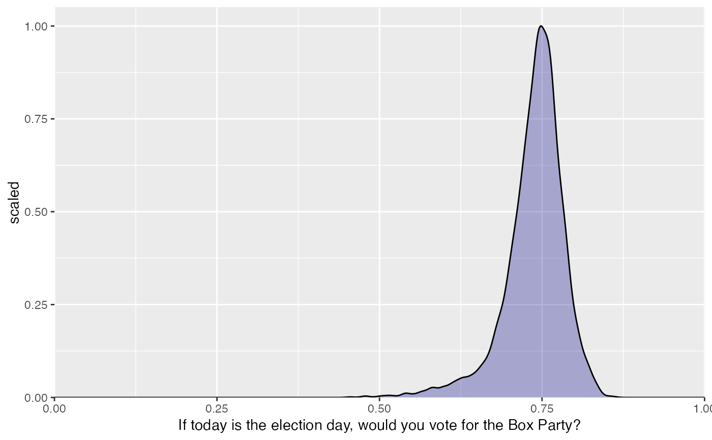
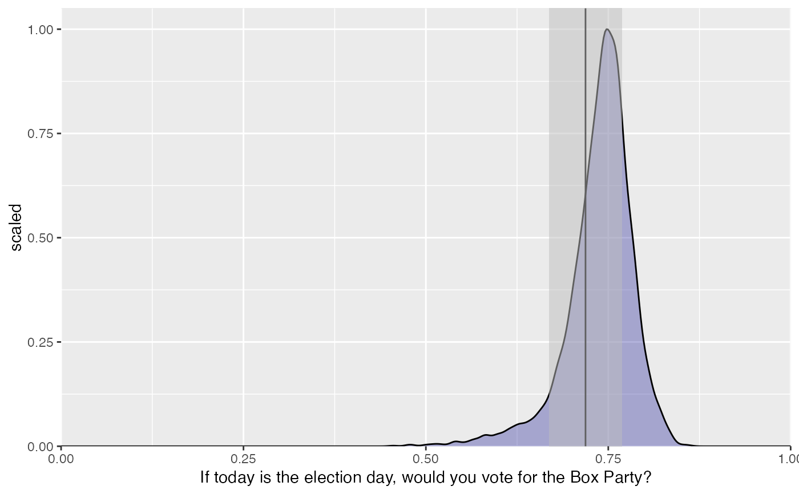
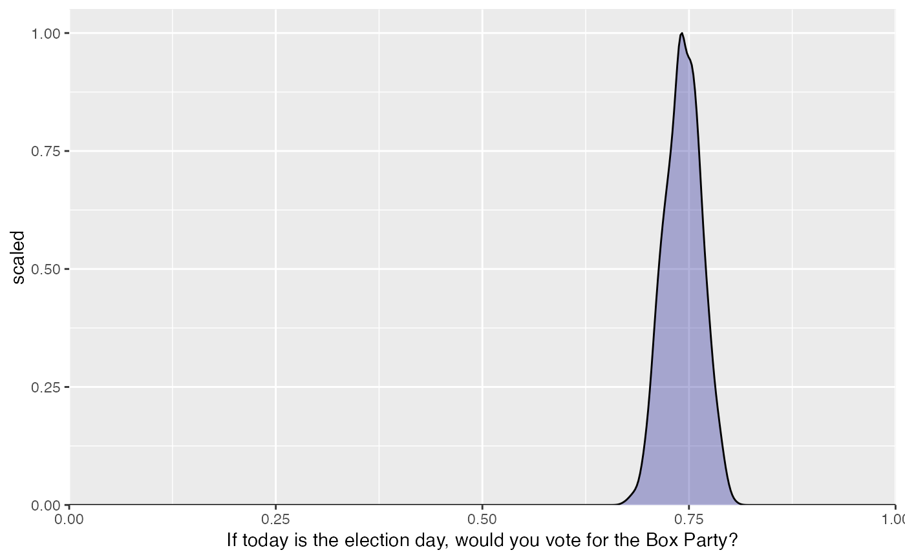
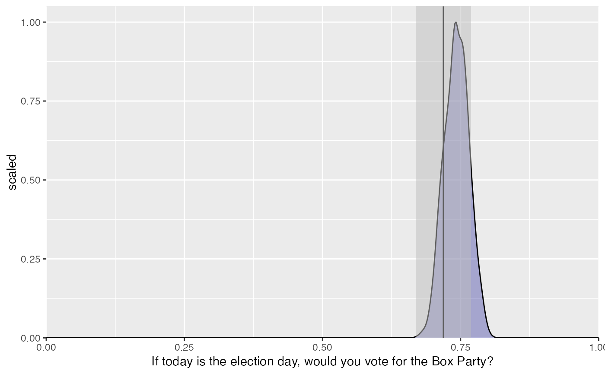

SurveyFit.RdAn R6 SurveyFit object stores a fitted model
object and provides methods for generating predicted probabilities for all
poststrat cells, generating population and group estimates, and visualizing
results.
new()Create a new SurveyFit object. This method is called
internally by the $fit() method of the SurveyMap object and does
not need to be called directly by the user.
SurveyFit$new(fit, map)
fitA fitted model object.
mapA SurveyMap object.
fit()Access the fitted model object
SurveyFit$fit()
map()Access the SurveyMap object
SurveyFit$map()
print()Call the fitted model object's print method
SurveyFit$print(...)
...Optional arguments to pass the print method.
population_predict()Use fitted model to add predicted probabilities to post-stratification dataset.
SurveyFit$population_predict(..., fun = NULL)
...Arguments other than the fitted model object and
poststratification data frame to pass to fun.
funThe function to use to generate the predicted probabilities.
This should only be specified if you used a model fitting function
not natively supported by mrpkit.
For models fit using rstanarm, brms, or lme4, fun
is handled automatically. If fun is specified then:
the first argument should be the fitted model object
the second argument should be the poststratification data frame
it can take an arbitrary number of other arguments
the returned object should match the specifications in the 'Returns' section below in order to be compatible with subsequent methods
A matrix with rows corresponding to poststratification cells and columns corresponding to posterior samples (or approximate ones in the case of lme4 models).
aggregate()Aggregate estimates to the population level or by level of a grouping variable
SurveyFit$aggregate(poststrat_estimates, by = NULL)
poststrat_estimatesThe object returned by population_predict.
byOptionally a string specifying a grouping variable. If specified the aggregation will happen by level of the named variable. If not specified population-level estimates will be computed.
A data frame. If by is not specified then the data frame will
have number of rows equal to the number of posterior draws. If by is
specified the data frame will have number of rows equal to the number
of posterior draws times the number of levels of the by variable,
and there will be an extra column indicating which level of the by
variable each row corresponds to.
plot()SurveyFit$plot(aggregated_estimates, weights = TRUE)
clone()The objects of this class are cloneable with this method.
SurveyFit$clone(deep = FALSE)
deepWhether to make a deep clone.
#> age gender vote_for highest_educ state y wt #> 1 56-65 male BP some college State D no 79.90290 #> 2 46-55 male Circle Party 4-year college State B yes 89.12213 #> 3 36-45 male Circle Party associates State D no 92.90569 #> 4 18-25 male Box Party high school State B yes 80.78384 #> 5 56-65 female BP high school State A yes 89.85756 #> 6 56-65 female Circle Party 4-year college State B yes 117.04200box_prefs <- SurveyData$new( data = shape_survey, questions = list( age = "Please identify your age group", gender = "Please select your gender", vote_for = "Which party did you vote for in the 2018 election?", y = "If today is the election day, would you vote for the Box Party?" ), responses = list( age = levels(shape_survey$age), gender = levels(shape_survey$gender), vote_for = levels(shape_survey$vote_for), y = c("no","yes") ), weights = "wt", design = list(ids =~1) ) box_prefs$print()#> Survey with 500 observations, 4 questions #> Independent Sampling design (with replacement) #> #> Column label: age #> Question: Please identify your age group #> Allowed answers: 18-25, 26-35, 36-45, 46-55, 56-65, 66-75, 76-90 #> #> Column label: gender #> Question: Please select your gender #> Allowed answers: male, female, nonbinary #> #> Column label: vote_for #> Question: Which party did you vote for in the 2018 election? #> Allowed answers: Box Party, BP, Circle Party, CP #> #> Column label: y #> Question: If today is the election day, would you vote for the Box Party? #> Allowed answers: no, yesbox_prefs$n_questions()#> [1] 4#> age_group gender vote_pref wt education state #> 1 66+ m BP 6.007461 4-years college A #> 2 56-65 f CP 8.465851 high school A #> 3 56-65 m CP 4.098878 4-years college C #> 4 66+ m BP 3.883250 4-years college C #> 5 66+ f CP 16.179562 some college B #> 6 18-35 m BP 3.851837 high school Dpopn_obj <- SurveyData$new( data = approx_voters_popn, questions = list( age_group = "Which age group are you?", gender = "Gender?", vote_pref = "Which party do you prefer to vote for?" ), # order doesn't matter (gender before age2 here) because # the list has the names of the variables responses = list( gender = levels(approx_voters_popn$gender), age_group = levels(approx_voters_popn$age_group), vote_pref = levels(approx_voters_popn$vote_pref) ), weights = "wt" ) popn_obj$print()#> Survey with 5000 observations, 3 questions #> Independent Sampling design (with replacement) #> #> Column label: age_group #> Question: Which age group are you? #> Allowed answers: 18-35, 36-55, 56-65, 66+ #> #> Column label: gender #> Question: Gender? #> Allowed answers: m, f, nb #> #> Column label: vote_pref #> Question: Which party do you prefer to vote for? #> Allowed answers: BP, CPq_age <- QuestionMap$new( name = "age", col_names = c("age","age_group"), values_map = list( "18-25" = "18-35", "26-35" = "18-35","36-45" = "36-55", "46-55" = "36-55", "56-65" = "56-65", "66-75" = "66+", "76-90" = "66+" ) ) print(q_age)#> -------------- #> age #> age = age_group #> -------------- #> 18-25 = 18-35 #> 26-35 = 18-35 #> 36-45 = 36-55 #> 46-55 = 36-55 #> 56-65 = 56-65 #> 66-75 = 66+ #> 76-90 = 66+q_party_pref <- QuestionMap$new( name = "party_pref", col_names = c("vote_for","vote_pref"), values_map = list("Box Party" = "BP", "BP" = "BP","Circle Party" = "CP", "CP" = "CP") ) q_gender <- QuestionMap$new( name = "gender", col_names = c("gender", "gender"), values_map = list("male" = "m","female" = "f", "nonbinary" = "nb") ) # Create SurveyMap object adding all questions at once ex_map <- SurveyMap$new( sample = box_prefs, population = popn_obj, q_age, q_party_pref, q_gender )#> Warning: Variable(s) 'education', 'state' are available in the population but won't be used in the model#> ============== #> age = age_group #> -------------- #> 18-25 = 18-35 #> 26-35 = 18-35 #> 36-45 = 36-55 #> 46-55 = 36-55 #> 56-65 = 56-65 #> 66-75 = 66+ #> 76-90 = 66+ #> ============== #> vote_for = vote_pref #> -------------- #> Box Party = BP #> BP = BP #> Circle Party = CP #> CP = CP #> ============== #> gender = gender #> -------------- #> male = m #> female = f #> nonbinary = nb# Or can add questions incrementally ex_map <- SurveyMap$new(sample = box_prefs, population = popn_obj) print(ex_map)#> ============== #> empty mappingex_map$add(q_age, q_party_pref)#> Warning: Variable(s) 'gender', 'education', 'state' are available in the population but won't be used in the model#> ============== #> age = age_group #> -------------- #> 18-25 = 18-35 #> 26-35 = 18-35 #> 36-45 = 36-55 #> 46-55 = 36-55 #> 56-65 = 56-65 #> 66-75 = 66+ #> 76-90 = 66+ #> ============== #> vote_for = vote_pref #> -------------- #> Box Party = BP #> BP = BP #> Circle Party = CP #> CP = CPex_map$add(q_gender)#> Warning: Variable(s) 'education', 'state' are available in the population but won't be used in the model#> ============== #> age = age_group #> -------------- #> 18-25 = 18-35 #> 26-35 = 18-35 #> 36-45 = 36-55 #> 46-55 = 36-55 #> 56-65 = 56-65 #> 66-75 = 66+ #> 76-90 = 66+ #> ============== #> vote_for = vote_pref #> -------------- #> Box Party = BP #> BP = BP #> Circle Party = CP #> CP = CP #> ============== #> gender = gender #> -------------- #> male = m #> female = f #> nonbinary = nb# Create the mapping between sample and population ex_map$mapping() # Create the poststratification data frame using all variables in the mapping # (alternatively, can specify particular variables, e.g. tabulate("age")) ex_map$tabulate() # Example rstanarm usage # Returns a SurveyFit object fit_1 <- ex_map$fit( fun = rstanarm::stan_glmer, formula = y ~ (1|age) + (1|gender), family = "binomial", seed = 1111, # just to keep the example fast and small chains = 1 )#> #> SAMPLING FOR MODEL 'bernoulli' NOW (CHAIN 1). #> Chain 1: #> Chain 1: Gradient evaluation took 0.000187 seconds #> Chain 1: 1000 transitions using 10 leapfrog steps per transition would take 1.87 seconds. #> Chain 1: Adjust your expectations accordingly! #> Chain 1: #> Chain 1: #> Chain 1: Iteration: 1 / 2000 [ 0%] (Warmup) #> Chain 1: Iteration: 200 / 2000 [ 10%] (Warmup) #> Chain 1: Iteration: 400 / 2000 [ 20%] (Warmup) #> Chain 1: Iteration: 600 / 2000 [ 30%] (Warmup) #> Chain 1: Iteration: 800 / 2000 [ 40%] (Warmup) #> Chain 1: Iteration: 1000 / 2000 [ 50%] (Warmup) #> Chain 1: Iteration: 1001 / 2000 [ 50%] (Sampling) #> Chain 1: Iteration: 1200 / 2000 [ 60%] (Sampling) #> Chain 1: Iteration: 1400 / 2000 [ 70%] (Sampling) #> Chain 1: Iteration: 1600 / 2000 [ 80%] (Sampling) #> Chain 1: Iteration: 1800 / 2000 [ 90%] (Sampling) #> Chain 1: Iteration: 2000 / 2000 [100%] (Sampling) #> Chain 1: #> Chain 1: Elapsed Time: 4.8443 seconds (Warm-up) #> Chain 1: 4.97986 seconds (Sampling) #> Chain 1: 9.82415 seconds (Total) #> Chain 1:# Example lme4 usage # fit_2 <- ex_map$fit( # fun = lme4::glmer, # formula = y ~ (1|age) + (1|gender), # family = "binomial" # ) # # Example brms usage # fit_3 <- ex_map$fit( # fun = brms::brm, # formula = y ~ (1|age) + (1|gender), # family = "bernoulli", # seed = 1111 # ) # predicted probabilities # returns matrix with rows for poststrat cells, cols for posterior draws poststrat_estimates <- fit_1$population_predict() # estimates by age level estimates_by_age <- fit_1$aggregate(poststrat_estimates, by = "age") head(estimates_by_age)#> age value #> 1 18-25 + 26-35 0.7584347 #> 2 36-45 + 46-55 0.7567402 #> 3 56-65 0.7712137 #> 4 66-75 + 76-90 0.7644404 #> 5 18-25 + 26-35 0.7344509 #> 6 36-45 + 46-55 0.7304963#> # A tibble: 4 x 3 #> age mean sd #> <fct> <dbl> <dbl> #> 1 18-25 + 26-35 0.707 0.0616 #> 2 36-45 + 46-55 0.762 0.0308 #> 3 56-65 0.753 0.0279 #> 4 66-75 + 76-90 0.731 0.0334# plot estimates by age fit_1$plot(estimates_by_age, weights = FALSE)fit_1$plot(estimates_by_age, weights = TRUE)# population estimate estimates_popn <- fit_1$aggregate(poststrat_estimates) mean(estimates_popn$value)#> [1] 0.7427626# plot population estimate fit_1$plot(estimates_popn, weights = FALSE)fit_1$plot(estimates_popn, weights = TRUE)